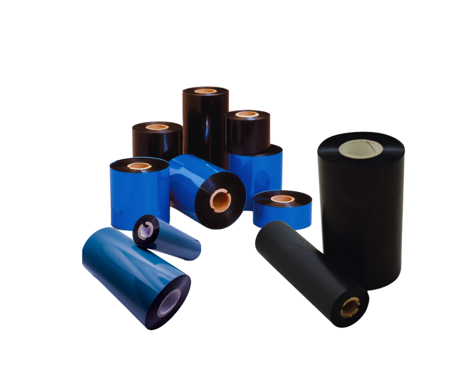

<section id="products-div">
    <div class="container">
        <div class="row">
            <div class="row mb-3 ">
                <div class="col-12 text-lg-start text-center">
                    <h2>Soluciones</h2>
                </div>
            </div>
        </div>
        <div id="carouselProducts" class="carousel slide" data-bs-ride="carousel">
            <div class="carousel-indicators">
                <button type="button" data-bs-target="#carouselProducts" data-bs-slide-to="0" class="active"
                    aria-current="true" aria-label="Slide 1"></button>
                <button type="button" data-bs-target="#carouselProducts" data-bs-slide-to="1"
                    aria-label="Slide 2"></button>
                <button type="button" data-bs-target="#carouselProducts" data-bs-slide-to="2"
                    aria-label="Slide 3"></button>
            </div>
            <div class="carousel-inner">
                <div class="carousel-item active">
                    <div class="row">
                        <div class="col-12 col-lg-6 p-3 order-lg-last">
                            <h3>Etiquetas autoadherible para empaque</h3>
                            <br>
                            <ul>
                                <li><strong>Térmico Directo TD:</strong> Ideales para productos de alta rotación y
                                    que la vida útil de la etiqueta es corta ya
                                    que son sensibles a fricción y calor. &nbsp;
                                    Se imprimen sin ribbon lo cual optimiza el
                                    proceso de impresion al cambiar los
                                    consumibles </li>
                                <br>
                                <li><strong>Transferencia Térmica TT:</strong> Se
                                    basa en el uso de un cabezal
                                    térmico, un ribbon (cinta) y la
                                    etiqueta, que puede ser en papel
                                    mate, semi brillo o sintética. &nbsp;
                                    puede usarse en una gran
                                    variedad de aplicaciones, ya sea
                                    para impresión simple y de uso
                                    cotidiano hasta para los
                                    ambientes más hostiles.&nbsp;
                                    Se imprime con ribbon. </li>
                            </ul>
                        </div>
                        <div class="col-12 col-lg-6 p-3 order-lg-first">
                            
                        </div>
                    </div>
                </div>
                <div class="carousel-item ">
                    <div class="row">
                        <div class="col-12 col-lg-6 p-3 order-lg-first">
                            <h3>Ribbon (cinta de impresión)</h3>
                            <br>
                            <ul>
                                <li><strong>Ribbons de Cera:</strong> Ideales para imprimir en papel e ilustración. Son la opción más común para 
                                    aplicaciones de etiquetado estándar, ofreciendo una solución económica para uso general.</li>
                                <br>
                                <li><strong>Ribbons Mixtos:</strong> Recomendados para imprimir en OPP, PVC e ilustración. 
                                    Proporcionan mayor resistencia a la abrasión y a diversos químicos, haciéndolos adecuados 
                                    para entornos más exigentes. </li>
                                    <br>
                                    <li><strong>Ribbons de Resina:</strong> Diseñados para imprimir en BOPP y PVC, ofreciendo una 
                                        durabilidad superior. Resisten condiciones extremas como humedad, abrasión, calor y químicos, 
                                        asegurando la legibilidad de la etiqueta en entornos hostiles. </li>
                            </ul>
                        </div>
                        <div class="col-12 col-lg-6 p-3 order-lg-last">
                            
                        </div>
                    </div>
                </div>
                <div class="carousel-item ">
                    <div class="row">
                        <div class="col-12 col-lg-6 p-3 order-lg-last">
                            <h3>Impresoras Térmicas</h3>
                            <br>
                            <ul>
                                <li><i class="fa-regular fa-circle-dot"></i>
                                    Para impresiónes de etiquetas rápidas, eficientes y de calidad superior con impresoras de alto rendimiento.
                                </li>
                                <li><i class="fa-regular fa-circle-dot"></i>
                                    Creación e impresión de diseños propios con codigo de barras, texto o imágenes.
                                </li>
                                <li><i class="fa-regular fa-circle-dot"></i>
                                    Fácil instalación con conectividad USB.
                                </li>
                                <li><i class="fa-regular fa-circle-dot"></i>
                                    La carga de rollos de etiquetas y la configuración son sencillas, lo que minimiza la necesidad de capacitación y reduce los errores del operador.
                                </li>
                                <li><i class="fa-regular fa-circle-dot"></i>
                                    Producen textos e imágenes nítidos y duraderos, esenciales para códigos de barras, legibilidad y gráficos de alta calidad.
                                </li>
                            </ul>
                        </div>
                        <div class="col-12 col-lg-6 p-3 order-lg-first">
                            
                        </div>
                    </div>
                </div>
            </div>
        </div>
    </div>
</section>